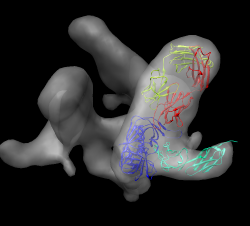

Tom Goddard
EMBO Practical Course:
The combination of electron microscopy and x-ray crystallography for the structure determination of large biological complexes. Web site.
Grenoble, France
October 20, 2009
HIV and ParM tutorials require Chimera 1.4 (October 16, 2009 or later version). Data files.
Quick reference for tutorials. These notes in PDF format.
|
Atomic models and sequences |
Morphing between conformations. Movie. |
Molecular assemblies |
|
Crystallography maps |
Single particle reconstructions |
EM tomography |
Chimera is developed by 4 programmers and one documentation specialist at the University of California, San Francisco.
Chimera provides no global fitting algorithms, does no long-running computations. It focuses on interactive data visualization and analysis, calculations taking fractions of a second up to a few seconds.
|
| |
| HIV spikes. Stephen Fuller lab. |

Data sets. All maps 20 Anstrom resolution.
[Use Chimera version 1.4. Start demo with default preferences file.]
Use menu entry File / Open, choose hiv/env_cd4_17b.map. This is CCP4 format map file, recognized by file suffix (*.map). Many other types read (e.g. Situs format, O format, MRC), show file types menu in open dialog.

Chimera mouse button functions:

|
Demonstrate volume dialog basics. Map value histogram, contour level, map value range, contour level, color, style (solid used for tomography data), grid size, step size (show effect with mesh), show/hide, close map. |
Open 1gc1.pdb, x-ray structure.
Zoom out to see molecule is far away from map.
Hide map with volume dialog.
Center and zoom molecule with Actions / Focus.
Color chains with command "rainbow chain"
show command-line Favorites / Command-line.
Mouse over chains showing chain ids in pop-up balloon. Model #, residue name/number also shown. Chain G (blue) is gp120. Chain C (cyan) is CD4 receptor fragment. Chains L,H are bound fragment antibody (FAB) 17b.
Display map with volume dialog show/hide icon. Actions / Focus Uncheck active 0 button below command-line (freezes map). Drag molecule close to map. Check active 0 button, rotate to inspect superposition. Hide map, examine molecule shape, like letter L. Look for L shape in map. Use active 0 button repeatedly to hand align molecule in map. Hold ctrl key with middle mouse button to move in/out of screen. Make map transparent with volume dialog color button, click Opacity on color editor.
Volume dialog menu Tools / Fit in Map. Fit dialog, choose 1gc1 from fit menu. Press Fit button on fit dialog. This moves 1gc1 to local best fit. Press Undo/Redo buttons to see how much it moved.
Note average map value before optimization and after (using undo/redo). That value is being maximized by local rotation/translation. Only relative values meaningful since map value normalization is arbitrary. Note number of atoms outside displayed contour before / after. Change contour level and press fit dialog Update to see number of atoms outside contour changes. Display atoms: Actions / Atoms + Bonds / show. Zoom in, note many atoms outside are waters, mouse over to see name HOH. Delete waters. Select / Residue / HOH. Note 603 atoms selected. Actions / Atoms / Delete. Update atoms outside contour. Make surface opaque to see where atoms stick out. Press Fit more times. Note slight changes. 100 step limit.
Average map value, or atoms outside contour are not very useful values to report in a paper or talk. Require some normalization, like map values normalized to molecular weight per cubic angstrom, or contour level set to enclose same volume as envelope of molecular model. Most commonly reported measure of fit quality is correlation. Show simulated map option, map resolution 20A. Fit. Correlation depends on domain (volume within lowest contour level of simulated map). So it also is an ambiguous value unless fit accounts for entire volume. That is not typical. Most papers reporting fits just say what software was used without reporting any goodness-of-fit. Simulated map is initially shown at contour level containing 95% of mass. Show correlation rises as lower contour (larger domain) is used. Why does it rise even when whole box used where 2/3 of trimer is matched to zero? Zero points in simulated map not used and gaussian cutoff range makes simulated map non-zero only close to molecule. So even correlation measure of goodness-of-fit is not uniquely defined without specifying an additional parameter. Result is that most papers describing fits do not report any quantitative measure of goodness-of-fit.
Save session cd4_17b_fit.py. Warning appears because simulated map not saved. That's ok since it can be easily recalculated. Quit Chimera, restart, load session. Show how to save simulated map, and resave session, quit, restore session. Only Chimera will read session file. Other programs will read saved maps and PDBs. Show saving PDB with aligned to fit in map. Save relative to map. 1gc1_fit.pdb Close session, open map env_cd4_17b.map, pdb 1gc1_fit, and pdb 1gc1. Note colors lost. The saved PDB and map should align in other programs but it depends on how those programs define the map origin. Chimera tries to use the most standard conventions for setting origin from map header values.
Have participants fit x-ray model (2ny7) into b12 FAB spike map env_b12.map on their own. 5 minutes. Walk around to answer questions. First close session. After 5 minutes, do fit. Try wrong orientation first (green FAB chain up), then flip 180 degrees, then use simulated map (corr 0.68). Save session b12_fit.py.

Close session. Open unbound map env.map. Use gp120 from 1gc1. Select chain G, invert selection, delete atoms. Now have participants do fit. Use high map threshold to see likely location. This is hard one. gp120 core is basically a triangle with a loop sticking out. The triangle could go into the density in 6 ways. Differences in fit quality are pretty small. Look at 1gc1 fit into cd4/17b bound map to see what orientation it has. Idea is that bound versus unbound spike should not be too different. Start another Chimera and open cd4_17b_fit.py session. Hide CD4 and FAB. Select chain G, invert selection. Actions / Ribbon / hide. Use rainbow to identify N and C termini (blue / red) point down toward spike base. Loop is closer to spike axis. Use rainbow on unbound fit Chimera. Orient N,C termini down, loop near axis. Fit. This in fact gives highest average map value of 6 orientations. Note pressing Fit more than once sometimes moves molecule slightly. One press is limited to 100 local gradient descent steps (maximum atom motion of half grid plane spacing).

How much does the gp120 rotate when CD4 and FAB 17b bind? Restore CD4/17b session cd4_17b_fit.py merging with unbound session. (Don't close existing open models.) Hide maps and non-chain G (select G, invert, ribbon hide). Recolor rainbow chain, ctrl-click to select residue, up-arrow to select chain, Actions / Color / cornflower blue Show relative alignment with "measure rotation #1 #3 showslab true" Color slabs to match ribbons and axis red using select and color menu. Note slabs depict rotation and shift along rotation axis. Hide ribbons with model panel (Favorites / Model Panel). Show unbound map mesh. Show rotation angle in reply log (Favorites / Reply log): 64 degrees, shift along axis 9 Angstroms.
Procedure used above won't work in exactly the same way. This is harder. In above case 1gc1 was fit to unbound and bound maps. Fitting simply moved and rotated the coordinate axes associated with each 1gc1 copy. The measure rotation command measured the relative orientation of the coordinate axes for the two copies of 1gc1. For the spike with b12 bound we fit 2ny7 while the unbound fit is with 1gc1. Measuring the orientation of the 1gc1 and 2ny7 coordinate axes won't give the rotation of gp120 because gp120 is not aligned in the original coordinate axes of 1gc1 and 2ny7. Open both in separate Chimera, show chain G, try measure rotation #0 #1 giving 0 degrees. No structure alignment is done by this command. How to measure rotation. Close session, open unbound and b12 bound sessions, hide maps, color unbound gp120 cornflower blue instead of rainbow. Method is to open a copy of the b12 bound molecule (2ny7), align its gp120 with the unbound gp120, then measure the rotation between this b12 copy and the original fit b12 molecule. Use Match Maker to align 2ny7 copy with 1gc1 (unbound gp120). Hide original 2ny7 and inspect new superposition. Structures are quite different. Reply log gives 0.8 A RMSD for 142 atoms -- core is very close. Use "measure rotation #4 #3 showslabs t" gives very large slabs. Slab is centered on displayed part of first molecule. Hide FAB, closing slab and axis models and rerunning command makes smaller slabs. Color cornflower blue for unbound, blue for bound. Reply log gives rotation 31 degrees, shift 3 Angstroms.
Want to make trimeric molecular model. Could fit 3 monomers. But imperfections in fitting would make the model not exactly 3-fold symmetric. Try to make a 3-fold symmetric model from one fit monomer. Open CD4/b12 session cd4_17b_fit.py, close previous models. Command to copy molecule for 3-fold symmetry is "sym #1 group c3". Try it. Symmetry axis not right -- using z axis through origin of molecule by default. Try "sym #1 group c3 coordinateSystem #0". This uses z axis in map #0 coordinate system. Use Orient and show volume outline box to show axis being used is at corner of volume box. Look at Coordinate panel of volume dialog. Volume origin placed at grid index 0,0,0, voxel size 4.1 Angstroms. Map is 100^3. Coordinates of grid index 50,50,50 would be (205,205,205) (205 = 50 * 4.1). Try "sym #1 group c3 coordinateSystem #0 center 205,205,205". Result is much better but tail of CD4 sticks out of map showing slight asymmetry.
To figure out where symmetry axis of map is, fit a rotated copy of the map to itself and look at the reported axis of rotation. Volume dialog menu File / duplicate, mesh, color red, model panel #3 active only, fit dialog fit #3 in #0, Results rotation 120 degrees, axis point 207.9,204.9,0. Try "sym #1 group c3 coordinateSystem #0 center 207.9,204.9,0". Looks good. As a visual check rotate around axis in steps of 120 degrees. "turn z 120 center 207.9,204.9,0 coord #0" Try rotating 100 times. "turn z 120 100 center 207.9,204.9,0 coord #0" Try changing center by 1 Angstrom to see how far off that looks: "turn z 120 100 center 206.9,204.9,0 coord #0" Very noticable. Simplifies analysis if symmetry axes pass through coordinate system origin. We can change the map origin to 207.9,204.9,0 by setting origin grid index to 50.7 50.0 0.0 and saving map. This will mess up alignments we made with the old origin. Can be fixed with "move 207.9,204.9,0 model #0 coord #0" after changing map origin.
Set background color white: Actions / Color menu, background, white, all of above. Easier to use command "set bg_color gray". Silhouette edges. Tools / Viewing Controls / Effects, silhouettes. Include membrane map, open env_membrane.map. Multiple transparent layers of spike map are visually confusing. Switch to one layer, volume dialog Features / Surface and Mesh Options, one transparent layer. Note jagged lighting highlights on lipid membrane map. Turn on glossy lighting. Tools / Viewing Controls / Lighting, quality glossy. Note also improves transparency, more opaque when edge-on view. Probably won't work on low-end workshop graphics (Intel). Show on my machine. File / Save Image.... Note that image size can be changed to different from screen. Can be larger than screen for print images (300 dpi say). For shadows can use raytracing with POVray. Took 3 minutes for this scene, 1 minute if two monomers are hidden.
Less detail can be better for showing overall molecular arrangement. Could show ellipsoids for gp120, CD4, FAB 17b. "measure inertia #1:.G" "measure inertia #1:.C" "measure inertia #1:.L,.H" Could show color zone. Best with just one monomer. Color two FAB chains the same. Color boundaries jagged. Subdivide surface helps but makes big surfaces.
Goal is to make an animation showing gp120 rotation when FAB b12 binds. First make simpler movies, then combine segments.
Open unbound fit session unbound_fit.py. Rotate in 2 degree steps, for 180 steps, command "turn y 2 180". Add movie recording commands to make a movie of this. Command file spin.cmd Result spin.avi
Make fit gp120 molecule fly into map. Zoom and move map and molecule to lower left corner. "savepos bound" Deactivate map and drag molecule to upper right corner, rotate. "savepos far" Reactivate map. "reset bound 50" Movie script to record this. fly.cmd Result fly.avi
Open b12 fit without closing unbound map and molecule. Hide b12 map. Fade out unbound map by making it 100% transparent over 25 frames. "surftransparency 100 #0 25" Undisplay unbound map. This is needed because of a limitation where Chimera can only correctly display one transparent map. "~modeldisplay #0" Fade in b12 map. First set it to 100% transparent, then display it, then increase transparency to 50% over 25 frames. "surft 100 #2" "modeldisp #2" "surft 50 #2 25" Movie script to record this. fade.cmd Result fade.avi
Use savepos to record initial spin location ("spin"), bound state view
("bound"), docked b12 to unbound gp120 ("docked"), and a final view angle
("final"). To get docked position use match-maker to align 2ny7 with 1gc1.
Hide gp120 part of 2ny7 for fly in (~ribbon #3:.G).
Use script
movie_b12.cmd
to turn, fly in b12, fade out unbound map, fade in b12 bound map, and
rotate gp120 and b12 to fit in bound map.
Result b12movie.avi
ParM is an actin homolog in bacteria that forms actin-like filaments. The filaments push pairs of low copy-number dna plasmids to opposite sides of the cell prior to cell division to insure that both daughter cells get copies of the plasmids. Filament ends attach to plasmids and then filament grows to microns in length pushing the plasmids away from each other. ATP is consumed to grow filament. Data sets: parm_open.map - open state ParM filament (19.5A resolution, emdb 5129) parm_closed.map - closed state ParM filament (17.2A resolution, emdb 5128) PDB 1mwk - apo ParM PDB 1mwm - ADP bound ParM
Have participants find best fit on their own. Harder than HIV spike. Open parm_open.map and apo ParM (1mwk) and fit molecule into map. The 1mwk x-ray model has two copies of ParM, delete chain B. Note initial map step size is 2. Might change to step 1. Alpha-helix bundle goes into lobe. Two possibilities give different correlations 0.58 vs 0.76.

Open closed map parm_closed.map and try to align with open map. Rotating and optimizing fit produces poor results. Raise thresholds on both maps so two proto-filaments are not connected. Display one map at a time and compare. Note hooked lobe points down in open map and up in closed map. Flip closed map end-to-end and try fit. Use high thresholds. Once well aligned note correlation is ~0.3 with high threshold but 0.7 with low threshold in open map since the match is much better if measured over a larger region.

A good way to see differences between maps is by morphing between them. Chimera requires the two maps have identical grids to do this. When we aligned the maps the grids of the two maps no longer match up. Show outline box to see this. "volume #0,2 showoutline true" Remedy this by resampling closed map on the grid of open map in the aligned positions. "vop resample #2 ongrid #0" Having open and closed maps aligned and on the same grid allows you to show the aligned maps in other visualization programs (e.g. O). You can write out the resampled map for this use. File / Same Map As... -> closed_aligned.mrc Use volume dialog Tools / Morph Map to morph between maps. Play. Use step 1, lower threshold Show 1mwk fit to see change is primarily a domain motion. Record movie and play it. Save as AVI for Windows machine viewing. Can have more interpolation steps using Options button, change step to 0.04 for 25 steps (0 to 1) instead of original 0.1 which gives 10 steps. Note that "morph" is nothing fancy, just linear interpolation at each grid point. Result parm_map_morph.avi
Look at the domain of the fit ParM molecule that is moving in the map morph. Mousing over residues suggests a possible hinge for the moving domain might be at residues 163 and 307. Normal model analysis might be helpful to assess where hinge might be. Chimera does not do that. Select residues 163-307. "select :163-307" Color purple (Actions / Color) to distinguish that domain. Can move just that domain using Tools / Movement / Movement Mouse Mode --> move selection Show closed map and try to move domain to fit. Note that bonds will be stretched (show by moving domain far away) but we'll fix that later. Switch back to "normal" mouse mode in movement dialog to rotate everything for different view.
Optimize fit of selected atoms with fit-in-map dialog. Fit "selected atoms" in closed map. Try without simulated map. Note it moves whole molecule by default. Turn off "Move whole molecules" in fit dialog options. Optimizing overlap pushes domain into other domain. Use simulated map 17A and optimize correlation. Moves far unless contour level is raised so correlation does not include far away regions. Then domain is further away. Correlation 0.7. Can optimize other domain too. Press right-arrow keyboard key to invert selection. Fit. Moves far. Need to undo and raise simulated map contour level. Hide maps and note bad contacts between domains.
Measure motion of each domain. Can't use "measure rotation" as in HIV example because that measures rotation of coordinates axes for whole molecules. Here the atom coordinates were changed, not the molecule coordinate axes, since we needed to move just part of the molecule. First open 1mwk, delete chain B, and match its coordinate axes to our existing copy with "matrixcopy #1 #7" Color domains to match original but lighter tints "select #7:163-307", Actions / Color -> hotpink, right arrow, color cornflower blue Measure rotation of purple/pink domain with match command: "match move false showmatrix true #1:163-307 #7:163-307" Match command normally moves the first molecule to align with the second. Use "move false" to prevent that. Output rotation with "showmatrix true" option. Reply log indicates 30 degree rotation, ~3 Angstrom shift. For blue domain "match move false showmatrix true #1:1-162 #7:1-162" Gives 13 degree rotation, ~1 Angstrom shift. To measure rotation of one domain relative to the other, first align the blue domains "match #1:1-162 #7:1-162" then measure the pink domain rotation "match move false showmatrix true #1:163-307 #7:163-307" Get 21 degrees, 1 Angstrom shift. The match command unfortunately does not have the options to show the rotation axes or slabs that "measure rotation" does. With some trickery we can show those depictions. Display blue domain rotation axis "match #1:1-162 #7:1-162" "measure rotation #7 #1 showslab t" Display pink domain rotation axis "match #1:163-307 #7:163-307" "measure rotation #7 #1 showslab t" Use "ctrl-p" to show previous commands in command-line.
Morphing molecules between open and closed state is another way to look at the domain rotations. Menu Tools / Structure Comparison / Morph Conformations. Add... #1, #7, #1 again to return to original state for movie looping. Create. Hide original two models and play movie. File / Record movie.... Result parm_mol_morph.avi To see relative motion of domains with blue domain fixed use "select #3:1-162" and Actions / Hold selection steady
There is an x-ray structure 1mwm of ParM with ADP bound that is in the closed conformation. Compare 1mwm to our two domain fit using Tools / Structure Comparison / MatchMaker Match is extremely good. RMSD 1.1 Angstroms for C-alpha 210 atoms, and RMSD 2.3 Angstroms for all 316 C-alphas. Latter RMSD is obtained by turning off "Iterate by pruning..." in MatchMaker dialog.
Domain fitting has made bonds connecting domains extremely long. Hide ribbon, show atoms full backbone trace, select inter-domain bonds to highlight them. Mouse over long bonds shows bond lengths of 5-6 Angstroms. Use force-field based gradient descent energy minimization to fix long bonds Tools / Structure Editing / Minimize Structure Add hydrogens and do other default minimization preparation steps. Minimizing whole molecule 100 steps takes about 3 minutes on my laptop. To minimize changes to domains, just minimize residues near domain connections (residue 162-163). "select #1:157-168" Minimize dialog fixed atoms -> unselected Minimizing only a few residues doesn't speed up calculation because forces are calculated using all atoms. Trick to do minimization fast. Copy 10 residues of loop, minimize it, the copy coordinates back to full structure. This won't handle clashes with atoms that are not copied. Use care. Copying is very tedious -- have to save temp file and reopen. Change mcopy command to do this. Skip this part in tutorial?
Useful to have Chimera start with buttons for commonly used tools on a toolbar and start with command-line showing. Here's how. Favorites / Preferences -> category Tools Click checkbuttons in the "On Toolbar" column to put buttons for desired tools on the main window: Model Panel, Reply Log, Volume Viewer, Fit in Map, Match Maker. Click "Auto Start" checkbutton for Command Line entry. Press "Save" at bottom of dialog so settings are saved in preferences file. Another useful configuration setting. Make Volume menu on main window using Tools / Volume Data / Volume Menu on Menubar Restart Chimera to demonstrate.
Determine closed map helical symmetry parameters rotation angle, rotation axis, shift per monomer using self-fit. Duplicate closed map Volume dialog menu File / duplicate, switch colors and style mesh, use Fit dialog, look at results in Reply Log. Press Fit several times to see variation in values. rotation angle = 165.4 degrees rotation axis = z, center is at x=y=0 shift = 24.3 A Errors on repeated fitting tend to be about 0.1 degree and 0.1 Angstroms. You can also self-fit with a smaller rotation: rotation angle = 29.5 degrees shift = 48.5 This is two steps of the previous symmetry. Using that would require two monomers to build entire filament -- a "two-start" helix. Two proto-filaments are easily seen at high contour level.
Fit 1mwm closed x-ray model near end of map and use sym command to make helically arranged molecule copies. Use this to examine contacts between monomers. Sym command 1 subunit is 24.3 A shift, 165.4 deg rotation, make 6 subunits sym #3 group h,1,-24.3,-165.4,6 coord #2 Need coordinate system argument and can reverse direction of building helix by changing sign of shift and angle. Color monomers distinctly rainbow models #3,4
To see steric clashes between ParM monomers find all clashes with one monomer surrounded by others using the findclash command: "findclash #4.2 intersubmodel true select true" The "select true" option selects the atoms involved. Pressing up-arrow selects full residues, and Actions / Atoms / show shows the atoms and yellow lines connecting them. Yellow lines show places where atoms are closer than the sum of their Van der Waals radii. 803 contacts were reported (a lot!) Mutations to residues 33, 34, 36, or 40 abolish filament formation. Are those near the interface between monomers? "select :33,34,36,40" Actions / Atoms / show Actions / Color / orange Actions / Atoms / sphere All are positioned between monomers.

Maybe hand of ParM maps is backwards? Try reversing hand by flipping z axis (vop zflip) and fitting ParM. "vop zflip #2" Optimizing correlation of 1mwm in flipped map gave best result of 0.69. In original map correlation was 0.79. These are both quite good. Aligning actin 1atn with ParM 1mwm with matchmaker shows the core matches but the periphery is very different. The periphery is responsible for the inter-monomer contacts that form the filament and the lack of similarity can explain why actin makes right-handed filaments and ParM left-handed filaments. Comparing 3byh actin filament (biomt) with ParM filament shows they are approximately colinear when one actin monomer is aligned with one ParM. Ellipsoid image shown.
Can see problems in the fit by subtracting map simulated from fit models from experimental map. Make 17 A resolution map from 6 monomer filament: "molmap #3,4 17" Subtract from experimental map "vop subtract #2 #5" This produces a map that looks identical to the experimental map because of different map normalization (simulated map has values ~0.1, experimental map has values ~4000). To scale simulated map to minimize the difference sum of root-mean-square values use "minRMS" option. "vop subtract #2 #5 minRMS true" Add negative contour level to difference map using ctrl-click on histogram. Turn of volume dialog Surface and Mesh option "Cap high values at box faces" so negative threshold does not enclose entire box. Color negative transparent pink, positive cyan. Pink is where simulated map is too large, cyan where too small. One cyan blob could have a nearby loop moved into it improving the match and eliminating a severe clash with a neighboring monomer.
Make a movie where both map and molecule morph simultaneously. This uses "vop morph" command for map and "coordset" command to play molecule morph. Create molecule and map morphs as shown earlier Tools / Structure Comparison / Morph Conformations. volume dialog Tools / Morph Map Script morph.cmd Result parm_morph.avi
Would be tedious but possible to morph many copies of ParM to show a whole filament molecular model morphing. Probably easier to use the sym command to create the molecule copies and the mcopy command to update the coordinates of all copies, and the perframe command to do this every frame. Haven't tried this yet.
Show how to get volume dialog back if you close it. Menu Tools / Volume Data / Volume Viewer. Make a reference sheet of how to find every tool used in training. Show download page and volume guide web pages. Show help command. Look at different binding locations of 17b and b12 FABs. Use match maker for aligning. Describe relation between difference map residual RMS and correlation. Set contour level to enclose expected volume. This might determine a meaningful threshold for judging atoms outside contour. Problem is that there is extra unfilled density (gp41). Could zone around fit complex before measureing volume.